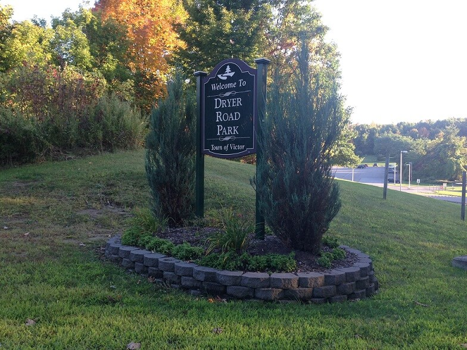

Site Overview:
This site is dedicated to Dryer Road Park in Victor, NY. Dryer Road Park is a premier recreational park located in the Finger Lakes region. This park is family and pet friendly and has something for everyone. Check out the many features of Dryer Road Park below!
Park Features:
Dryer Road Park has numerous trails for running, jogging, hiking, and mountain biking. Mountain bikers will also love the slalom and skills courses in the park. Other features include: multiple multi-sport fields, a full-size outdoor hockey/lacrosse rink, a large modern playground, a pavilion with charcoal grill, restrooms and concession facilities.
